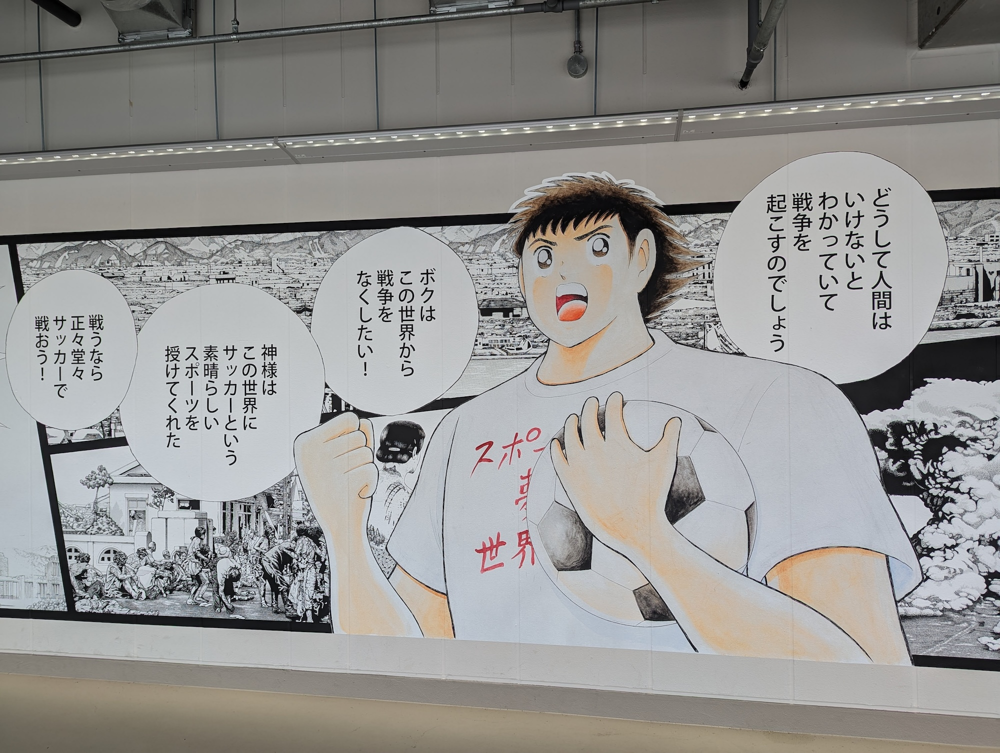
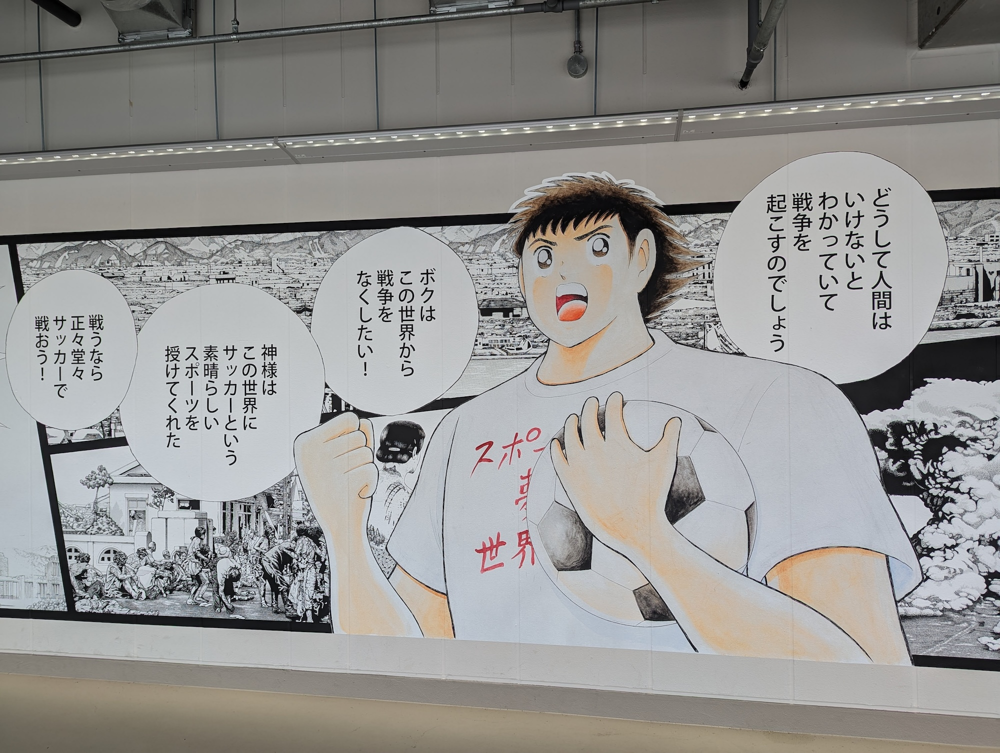

広島市について
Thursday, 04 July 2024今週末は広島に行った。広島に行ったことがあるけど、広島市で十分時間を過ごさなかった。前回宮島だけを訪れた。
今回は、広島平和記念資料館や原爆ドームや広島城を訪れた。広島平和記念資料館はちょっと悲しい経験だったけど、大切な経験だったと思っている。




今週末は広島に行った。広島に行ったことがあるけど、広島市で十分時間を過ごさなかった。前回宮島だけを訪れた。
今回は、広島平和記念資料館や原爆ドームや広島城を訪れた。広島平和記念資料館はちょっと悲しい経験だったけど、大切な経験だったと思っている。
